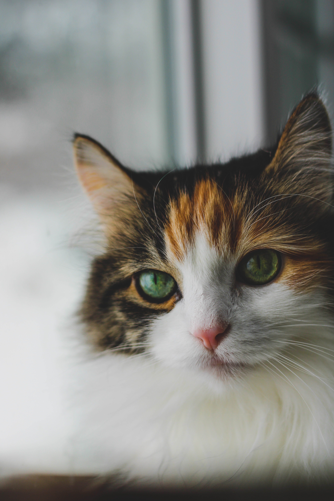

I grew up in the small town of Sunnyside located in central Washington. Growing up there wasn't much to do but my friends, family and I made do and found things to occupy our time. I recently found an interesting article on Wikipedia that details the history, geography, demographics, attractions and events, as well as notable people that also grew up in Sunnyside, WA.
According to the article, the modern settlement of Sunnyside was founded in 1893 by Walter Granger, however what is now known as Sunnyside was originally inhabited by the "Taptat-hlama" meaning "People at the rapids," before being relocated onto the Yakima Indian Reservation. The name Sunnyside came from a merchant who went by the name of W.H. Cline later that same year. By the time 1901 rolled around, Sunnyside's population had doubled, increasing the need for businesses. Sunnyside during 1901 contained a bank, 11 stores, 3 hotels, a newspaper, 2 blacksmith shops, 2 livery barns, 3 churches and a large school. What I found most interesting about the businesses on site at that time was the newspaper called the "Sunnyside Sun," which is the same newspaper I grew up reading and is still in print today, 2023. Click here to read more about the small town of Sunnyside.
The first photograph is a picture I took of my cat named Cece who I have had for many years, and the second photography is a cute image I found online of a cats nose.
